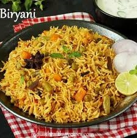

Famous Food in India
Paneer Tikka

Paneer Tikka consists of grilled cubes of marinated cottage cheese, often served as a starter or snack.
Butter Chicken

Butter Chicken is a creamy tomato-based chicken curry that is beloved for its smooth texture and savory flavor.
Masala Dosa

Masala Dosa is a crispy rice pancake filled with a spicy potato mixture. Its a popular South Indian breakfast dish.
Chole Bhature

Chole Bhature is a dish consisting of spicy chickpeas served with deep-fried bread, popular in North India.
Biryani
Biryani is a flavorful rice dish with spices, often including chicken or lamb. It is known for its rich aroma and taste.